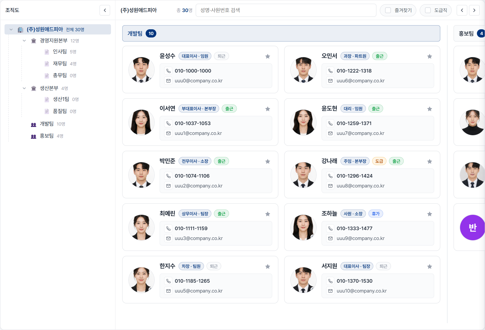
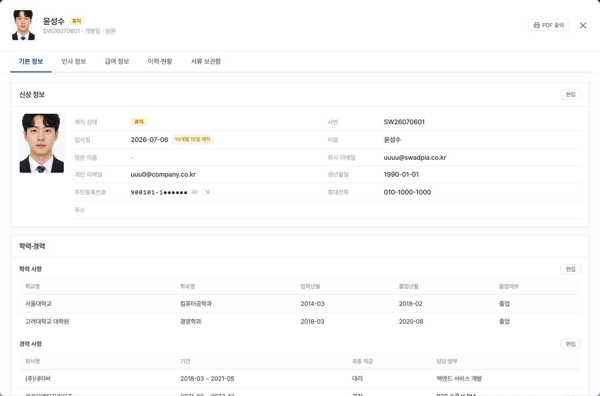
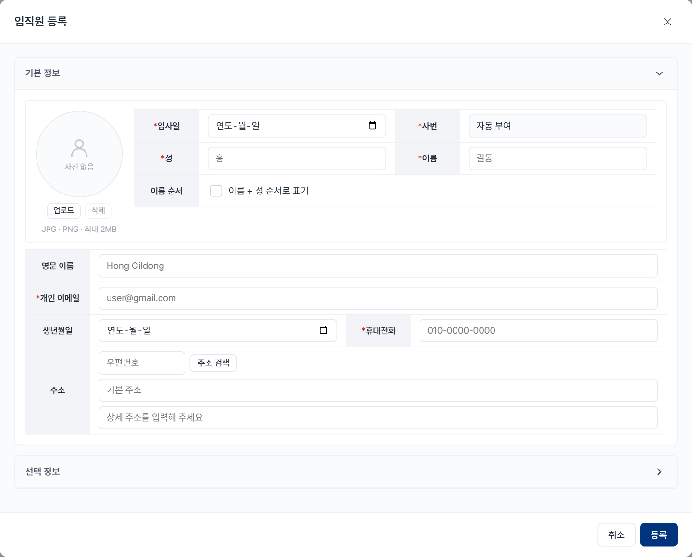
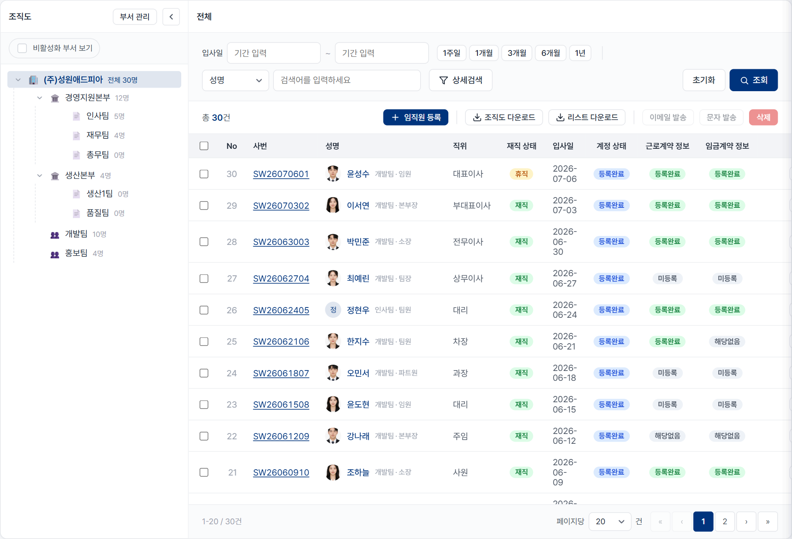
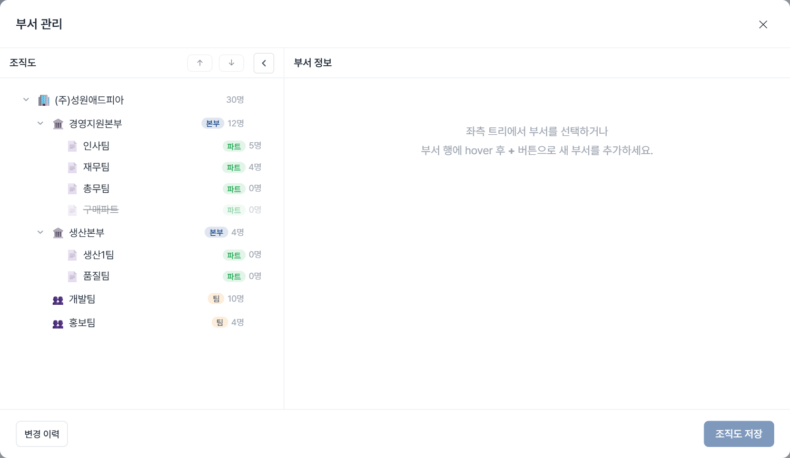
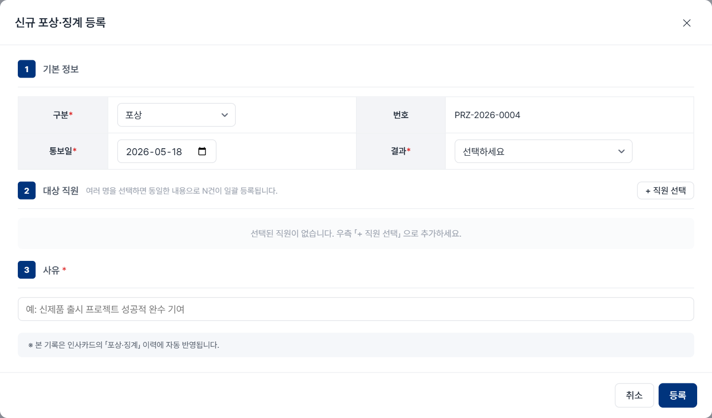
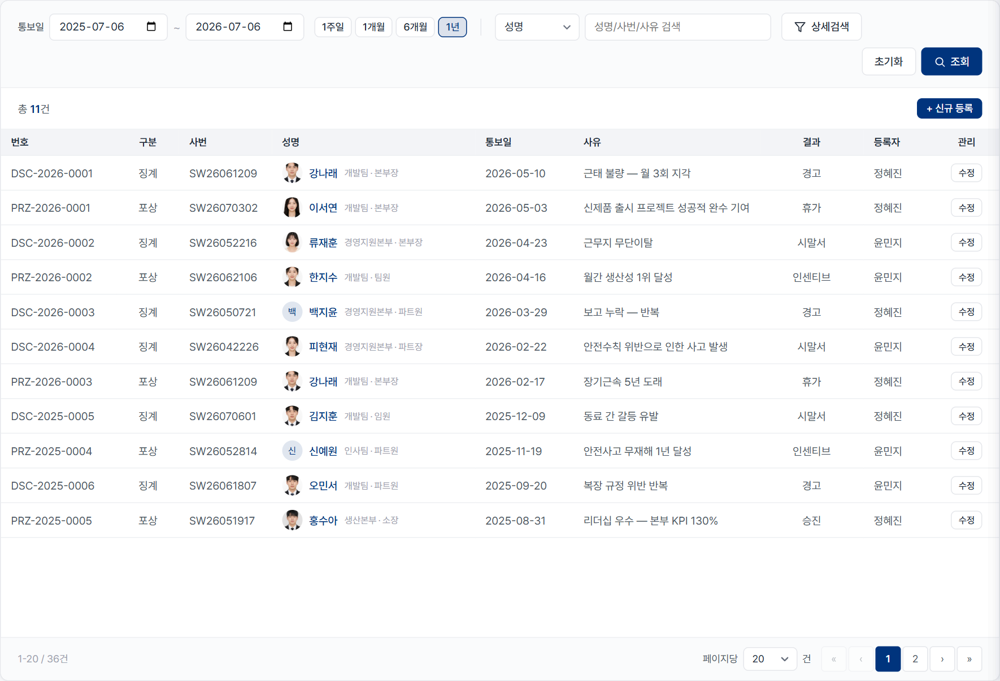

인사관리 업무 매뉴얼
「인사 > 인사 관리」 세 화면 — 임직원 현황 · 임직원 관리 · 포상·징계 — 에서업무 처리 흐름 중심입니다.
역할 표시
일반 임직원 조회 위주 · 누구나
인사 실무자 등록 · 처리 권한 필요
확인 필요 실제 운영과 맞는지 검수해 주세요
📌 검수 안내 — 본 매뉴얼의 세부 값(단계 순서, 필수 항목, 결재선, 결과 옵션 등)은 현재 화면 구현을 기준으로 작성했습니다.
실제 회사 운영 기준과 다를 수 있는 지점에는 확인 필요 태그를 달아두었으니, 그 부분만 확인·수정해 주세요.
캡처 이미지는 자리(placeholder) 만 잡아두었습니다.
A
임직원 현황
조직도 + 사원 카드 갤러리 · 조회 중심 화면
A-1
사람 찾기
일반 임직원
특정 직원의 소속·연락처·직위를 빠르게 확인하고 싶을 때.
📍 인사 › 인사 관리 › 임직원 현황
처리 순서
상단 검색창에 성명 또는 사원번호 를 입력합니다.
또는 좌측 조직도 트리 에서 부서를 선택하면 해당 부서 카드 영역으로 이동합니다.
찾는 사원 카드 를 클릭하면 인사정보카드가 열립니다. (→ A-5 )

1 성명·사번 검색2 조직도 트리에서 부서 선택임직원 현황 — 검색창 + 조직도 트리 + 사원 카드 갤러리
💡
팁 — 검색은 성명·사번 둘 다 인식합니다. 자주 찾는 사람은 카드의
★ 로 즐겨찾기 해두세요. (→
A-4 )
A-2
부서별 현황 보기
일반 임직원
본부·팀별로 누가 소속돼 있는지, 인원이 몇 명인지 훑어볼 때.
📍 임직원 현황 › 좌측 조직도
처리 순서
좌측 조직도 트리 에서 회사 › 본부 › 팀/파트를 펼치거나 접습니다.
각 부서 노드에 소속 인원수 가 표시됩니다.
부서를 클릭하면 우측이 해당 부서 카드 묶음으로 스크롤됩니다.
1 조직도 트리에서 부서 선택
조직도 트리(부서별 인원수 표시) + 우측 부서별 카드 묶음
💡 팁 — 비활성 부서는 비활성 표시가 붙습니다.
A-3
오늘 근태 상태 확인
일반 임직원
지금 누가 출근했는지 / 휴가인지 등 오늘의 근무 상태를 볼 때.
📍 임직원 현황 › 사원 카드 배지
① 사진 우측 하단 — 오늘 근태 배지(점+글자) 확인 필요
배지 의미
● 근무중 출근 체크 후 근무 중(점이 깜빡임) ● 퇴근 퇴근 체크 완료(업무 종료) ● 휴가 연차·병가·반차 사용 중 ● 미출근 오늘 출근 기록 없음(중립 — 아침 기본값)
② 이름 옆 — 재직/고용형태 배지
표기 의미
직위 · 직책 이름 옆 회색 글씨 로 표시(배지 아님) 휴직 휴직 중인 직원(휴직 시 근태 배지 대신 표시) 도급 도급(외부 인력) 직원
⚠️ 사진의 근태 배지는 재직/퇴직 이 아니라 오늘 근태 기준입니다. 재직/휴직 상태는 이름 옆 배지 또는 인사카드에서 확인하세요.
A-4
연락처 바로 쓰기 · 즐겨찾기
일반 임직원
전화·메일을 바로 걸거나, 자주 찾는 사람을 상단에 고정할 때.
📍 임직원 현황 › 사원 카드
처리 순서
카드의 전화번호 를 누르면 전화 앱, 이메일 을 누르면 메일 작성이 열립니다.
카드의 ★ 를 누르면 즐겨찾기에 등록됩니다.
상단 즐겨찾기만 보기 · 도급직만 보기 토글로 목록을 좁힐 수 있습니다.
1 즐겨찾기만 보기2 도급직만 보기
카드의 전화·이메일 링크, ★ 즐겨찾기, 상단 즐겨찾기/도급직 토글
A-5
인사카드 열람 · PDF 출력
일반 임직원
인사 실무자
한 사람의 인사 정보 전체(신상·학력·경력·계약·서류 등)를 볼 때.
📍 임직원 현황 › 카드 클릭 → 인사정보카드
인사카드 탭 구성
기본 정보 — 신상·학력·경력·자격·어학 등인사 정보 — 소속·발령·근로/임금 계약급여 정보 — 급여·임금변동 등 확인 필요 (권한별 노출)이력·현황 — 발령·평가·근태·포상징계 이력서류 보관함 — 입사서류·증빙
PDF 출력
인사카드 우측 상단 🖨 PDF 출력 버튼을 누릅니다.
새 창이 열리며 인쇄 대화상자가 뜹니다.
대상을 "PDF로 저장" 으로 선택하면 인사기록카드가 저장됩니다.

1 PDF 출력2 탭 5개인사정보카드 — 우측 상단에 [🖨 PDF 출력] 버튼, 상단 5개 탭
🔒 권한 주의 — 주민등록번호·급여·평가 등 비공개정보 는 열람 권한이 있는 사용자에게만 보이며, 열람 이력이 기록됩니다. 확인 필요 (역할별 노출 범위)
B
임직원 관리
직원 마스터 관리 · 등록/온보딩/계약/퇴사 — 인사 실무자 전용
B-1
신규 입사자 등록
인사 실무자
신규 입사자가 확정되어 시스템에 등록할 때.
📍 임직원 관리 › 툴바 + 임직원 등록
처리 순서
툴바의 + 임직원 등록 을 클릭합니다.
기본 정보 를 입력합니다 (아래 표 참고). 사번은 자동 부여 됩니다.필요 시 선택 정보 (부서·직위·근로유형 등)를 펼쳐 입력합니다.
등록 을 누르면 목록에 추가되고, 온보딩이 시작됩니다. (→ B-2 )
입력 항목 확인 필요
항목 필수 비고
입사일 * — 성 / 이름 * 이름 순서(성/이름) 뒤집기 가능, 영문 이름 선택 개인 이메일 * 온보딩 안내 메일 발송지 · 형식 검증 휴대전화 * 형식 검증 사번 자동 시스템 자동 채번 (입력 불가) 사진 · 생년월일 · 주소 선택 사진 JPG/PNG 2MB, 주소는 우편번호 검색 부서·직위·직책·근로유형 선택 근로유형: 정규직 / 계약직 / 일용직 / 도급직

1 선택 정보 펼치기2 등록임직원 등록 모달 — 기본 정보(필수 * 표시) + 선택 정보 아코디언, 사번은 자동 부여
💡 근로유형별 분기 확인 필요 — 계약직 선택 시 일반/촉탁/인턴, 정규직은 수습 여부, 도급직은 소속회사를 추가로 지정합니다.
B-2
입사 온보딩 진행
인사 실무자
등록된 입사자가 계정·정보·계약·서류를 순서대로 완료하도록 진행할 때.
📍 임직원 관리 › 목록 상태 컬럼 · 인사정보카드
온보딩 7단계 확인 필요 (순서)
이메일 발송완료 — 입사자에게 안내 메일 발송계정등록 완료 — 입사자가 계정 생성정보등록 완료 — 입사자가 본인 정보 입력계약 발송 — 근로/임금 계약서 서명요청 발송 (→ B-3 )계약 서명완료 — 입사자가 전자서명서류 발송 — 입사서류 발송서류 제출완료 — 입사자가 서류 제출 → 입사 확정
진행 상태 pill
상태 의미
등록 등록 직후, 온보딩 시작 전 진행중 7단계 중 진행 중 (세부 단계 표시) 완료 모든 단계 완료 · 입사 확정 계약만료 계약직 기간 만료

임직원 관리 목록 — 재직 상태·계정·근로/임금계약 정보 컬럼과 진행 상태 pill ⚠️
이메일 실패 시 별도
이메일 실패 표시가 뜹니다. 이 경우 재발송이 필요합니다. (→
B-5 )
B-3
계약 서명요청 · 서류 발송
인사 실무자
입사자가 정보 입력을 마친 뒤, 근로/임금 계약과 입사서류를 발송할 때.
📍 임직원 관리 › 인사카드 › 인사 정보 탭
처리 순서
대상 직원의 인사정보카드 를 열고 인사 정보 탭으로 이동합니다.
정보 등록이 완료되면 계약 항목에 서명 요청 버튼이 나타납니다. 클릭해 근로계약 서명요청을 발송합니다.
근로계약 서명완료 후 임금계약 도 같은 방식으로 서명 요청 합니다.
입사서류는 서류 항목의 전체 발송 으로 일괄 발송합니다.
인사카드 「인사 정보」 탭 — 근로/임금계약의 [서명 요청], 입사서류는 [전체 발송]
💡 새 근로계약서 작성 자체는 작성 버튼을 누르면 계약 관리 메뉴로 이동해 진행합니다. 계약서 상세 작성은 계약 관리 매뉴얼을 참고하세요.
⚠️ 서명 요청 버튼은 등록완료 & 미서명 상태일 때만 보입니다. 확인 필요 (표시 조건)
B-4
재직상태 변경 · 퇴사 처리
인사 실무자
휴직·복직·퇴사 등 재직 상태가 바뀔 때.
📍 임직원 관리 › 인사카드 확인 필요 (처리 위치)
재직 상태
상태 설명
재직 정상 근무 휴직 휴직 중 퇴직 퇴사 완료 — 기본 목록에서 자동 숨김
📷 캡처 자리 — 재직상태 변경 화면 (처리 위치 확정 후 직접 캡처 필요)
🔒 퇴사 처리 시 해당 직원은 기본 목록에서 자동으로 숨겨집니다(데이터는 보존). 처리 권한·절차는 확인 필요 입니다.
B-5
이메일 · 문자 발송
인사 실무자
온보딩 안내 메일을 (재)발송하거나, 대상자에게 문자를 보낼 때.
📍 임직원 관리 › 행 선택 → 툴바 이메일/문자 발송
처리 순서
목록에서 대상 행의 체크박스 를 선택합니다.
툴바의 이메일 발송 또는 문자 발송 을 누릅니다.
내용을 확인하고 발송합니다. 계정 미등록 행은 개별 이메일 발송/재발송 버튼으로도 가능합니다.
목록에서 행 체크 후 툴바의 이메일/문자 발송 · 개별 행의 발송 버튼 ⚠️ 재발송 쿨다운 — 오늘 이미 발송된 대상은 하루 뒤 재발송할 수 있습니다.
B-6
조직도 · 명단 내려받기
인사 실무자
조직도나 임직원 명단을 파일로 보관·공유할 때.
📍 임직원 관리 › 툴바
처리 순서
조직도 다운로드 — 조직도를 새 창으로 열어 인쇄 → "PDF로 저장".리스트 다운로드 — 현재 목록을 엑셀 파일로 내려받습니다.
1 리스트 다운로드(엑셀)
툴바의 조직도 다운로드 · 리스트 다운로드(엑셀) 버튼
B-7
조건 검색으로 인원 추출
인사 실무자
특정 조건(계정 미등록, 계약 미완료 등)에 해당하는 인원만 추릴 때.
📍 임직원 관리 › 검색 패널 · 상세검색
검색 조건
구분 조건
기간 입사일 기준 (이번주 / 1·3·6개월 / 1년) 검색조건 성명 / 사번 상세검색 계정 상태 · 근로 유형 · 근로계약 정보 · 임금계약 정보 부서 좌측 조직도 트리에서 선택 (비활성 부서 보기 옵션)
상단 검색 패널 — 기간·검색조건·상세검색(계정/근로유형/계약 상태) 💡 추출한 결과를 그대로
B-6 리스트 다운로드로 엑셀 저장할 수 있습니다.
B-8
부서(조직) 관리
인사 실무자
부서를 추가·이름변경·이동·비활성화하는 등 조직도를 관리할 때.
📍 임직원 관리 › 부서 관리 모달
처리 순서
부서 관리 모달을 엽니다.
부서 추가 / 이름변경 / 이동 / 구분변경 / 비활성 / 삭제 를 수행합니다.
조직도 저장 으로 변경을 확정합니다. (변경 이력 확인 가능)

부서 관리 모달 — 조직도 트리(본부/파트/팀), 하단 [변경 이력]·[조직도 저장] 💡 예전 「조직 관리」 메뉴는 이 부서 관리 모달 로 통합되었습니다. 부서 관리 진입은 임직원 관리 화면에서 합니다.
C
포상 · 징계
포상/징계 이력 등록·조회 — 인사 실무자 전용
C-1
포상 등록
인사 실무자
우수사원 포상 등 포상 건을 등록할 때. 여러 명에게 동일 내용을 한 번에 등록할 수 있습니다.
📍 포상·징계 › 툴바 + 신규 등록
처리 순서
툴바의 + 신규 등록 을 클릭합니다.
구분을 포상 으로 선택합니다. 번호(PRZ-연도-#### )는 자동 부여됩니다.
+ 직원 선택 으로 대상자를 여러 명 선택할 수 있습니다 (N명에게 동일 내용 N건 등록).통보일 · 결과 · 사유 를 입력하고 등록 합니다.
입력 항목
항목 필수 비고
구분 * 포상 대상 직원 * 다중 선택 가능 통보일 * — 결과 * 휴가 / 인센티브 / 승진 확인 필요 사유 * 텍스트

1 + 직원 선택 (다중 가능)2 등록포상 등록 모달 — 구분·번호(자동)·통보일·결과·사유, [+ 직원 선택]으로 다중 대상
💡 등록한 포상 건은 대상자
인사카드 의 포상·징계 이력에 자동 반영됩니다. (→
C-3 )
C-2
징계 등록
인사 실무자
시말서·경고 등 징계 건을 등록할 때.
📍 포상·징계 › 툴바 + 신규 등록
처리 순서
+ 신규 등록 → 구분을 징계 로 선택합니다. 번호는 DSC-연도-#### 로 자동 부여됩니다.대상 직원 · 통보일 · 결과 (시말서/경고/해고) · 사유를 입력합니다.
등록 합니다. 징계는 결재선 승인 절차를 거칩니다. 확인 필요
등록 모달은 포상·징계 공통 — 구분에서 징계 선택 시 결과가 시말서/경고/해고로 바뀜 🔒 결재선 — 징계 건의 승인 라인(누가 승인하는지)은 확인 필요 입니다. 실제 결재 흐름을 확인해 채워주세요.
C-3
포상 · 징계 조회
인사 실무자
기존 포상·징계 이력을 찾아볼 때.
📍 포상·징계 › 검색 패널
조회 방법
기간 (통보일 기준, 기본 최근 1년) · 성명/사번/사유 로 검색합니다.상세검색의 구분 필터로 포상만 / 징계만 볼 수 있습니다.
목록에서 성명을 누르면 해당 직원 인사카드 가 열립니다.

1 + 신규 등록2 행별 수정포상·징계 목록 — 구분 컬럼(🏆/⚠️)으로 섞여 표시, 검색 필터로 구분
⚠️ 이 화면에는 상단 포상/징계 탭이 없습니다. 두 종류가 한 목록에 구분 컬럼(🏆/⚠️) 으로 섞여 표시되며, 구분은 검색 필터 로 나눕니다.
C-4
수정 · 삭제
인사 실무자
등록한 포상·징계 건을 고치거나 지울 때.
📍 포상·징계 › 행 수정 버튼
처리 순서
목록에서 해당 행 우측의 수정 버튼을 누릅니다. (행 자체 클릭이 아닌 수정 버튼)
통보일·결과·사유를 고친 뒤 저장 합니다.
삭제하려면 수정 모달 안의 삭제 버튼을 사용합니다.
수정 모달 — 통보일·결과·사유 수정, 하단 [저장]/[삭제]. 대상 직원은 변경 불가
⚠️ 수정 시 대상 직원은 변경할 수 없습니다. 대상이 잘못됐다면 삭제 후 다시 등록하세요.
성원애드피아 ERP · 인사관리 업무 매뉴얼 · 화면 구현 기준 작성 (검수 후 확정)